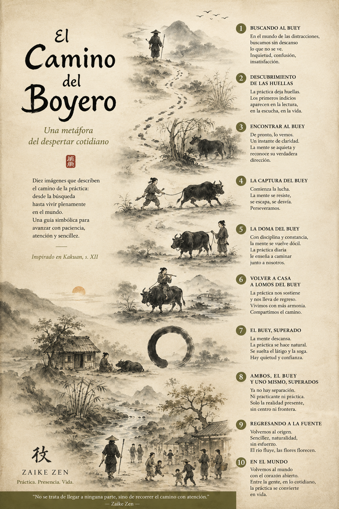

El Camino del Practicante
Una lectura simbólica de las Diez Imágenes del Boyero como mapa interior para quien comienza o retoma la práctica de Zaike Zen.

El camino del practicante
Las antiguas imágenes del boyero han acompañado durante siglos a quienes recorren el camino de la práctica. No describen una doctrina ni un método cerrado. Son una representación simbólica de la búsqueda, del aprendizaje y de la transformación interior que pueden surgir cuando aprendemos a detenernos y a mirar con atención.
Al comienzo sólo existe una inquietud difícil de nombrar. Algo parece faltar y, al mismo tiempo, algo parece llamar desde una profundidad que todavía no comprendemos. Entonces aparecen las primeras huellas.
La práctica comienza de forma sencilla: sentarse, respirar y volver una y otra vez al instante presente. Poco a poco aprendemos a reconocer el movimiento de la mente, las tensiones del cuerpo y los momentos de claridad que surgen entre el ruido cotidiano.
Como el boyero de las antiguas imágenes, descubrimos que el verdadero camino no consiste en perseguir algo lejano, sino en aprender a permanecer presentes. La atención se pierde, regresa y vuelve a perderse innumerables veces. Cada regreso forma parte de la práctica.
Con el tiempo comprendemos que aquello que buscábamos nunca estuvo completamente ausente. Siempre estuvo aquí, en la experiencia directa de este momento, esperando ser reconocido.
Por eso la última imagen muestra un regreso. El practicante vuelve a la vida cotidiana, a los caminos, al trabajo y a las relaciones humanas. Nada parece haber cambiado, pero la mirada es distinta.
En Zaike Zen entendemos estas imágenes como un mapa simbólico. No indican una meta que alcanzar, sino una orientación para recorrer con serenidad el camino de la práctica.
«El camino no nos aleja de la vida. Nos devuelve a ella.»